campaign更新情報
ツール一覧
画像はプレイ・操作画面の一例です。
こんなことばで探せます
利用シーン
ツール
このシーンのツールはまだありません
「すべて」に戻すと、ほかのツールを見られます。
こんなことばでも探せます
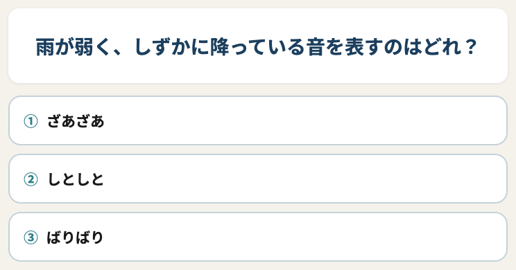
コトバのテーマクイズ
その日のゲームで使う「コトバのテーマ」を、3択ミニクイズ4問で先に紹介するツール。最後のまとめ画面から、そのテーマを使うゲームへそのまま進める。
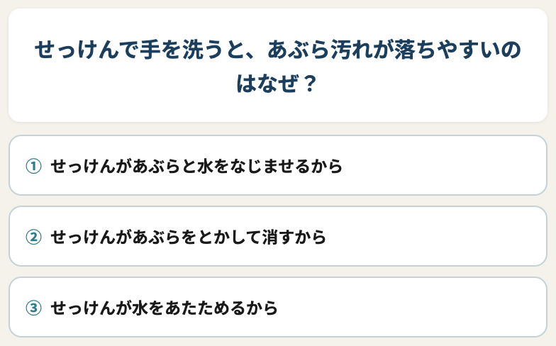
クイズパック
雑学3択クイズと連続2択クイズをまとめて進行できる画面共有向けツール。ことばクイズや全部シャッフルにも対応。ルームを作れば、各自の端末で答えて早さと正解を競うこともできる。
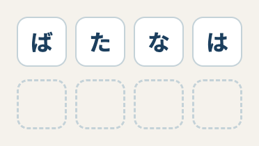
ことばシャッフル
バラバラの文字をならべかえて、ことばを当てる脳トレゲーム。4段階のレベルで楽しめる。
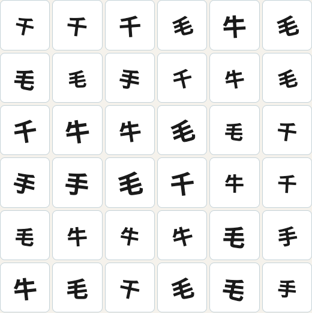
漢字さがし
にている漢字の中からお題の漢字をさがす観察力ゲーム。3つの難易度で楽しめる。
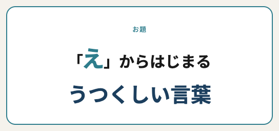
ことばみっけ
「『あ』からはじまる、やさしい言葉」のように、頭文字とお題に合うことばを、みんなでチャットに出し合う言葉あそび。ゲームマスターはお題を出してチャットにコピーするだけ。
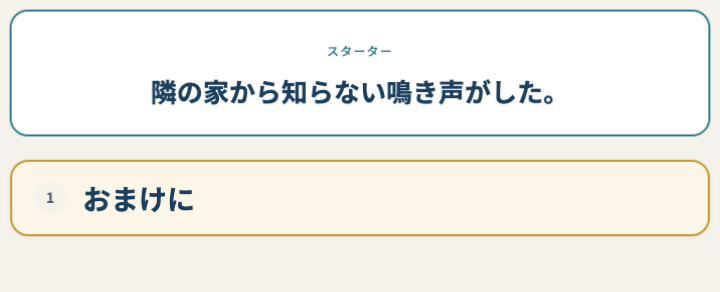
ことばリレー
「だから」「でも」「ちなみに」…つなぎ言葉カードを引いて話を転がす多人数向けトークゲーム。
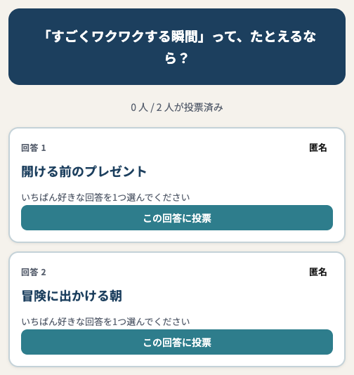
たとえグランプリ
お題をたとえで表現して、お気に入りに匿名投票する大喜利ゲーム。比喩や語彙を遊びながら使える。
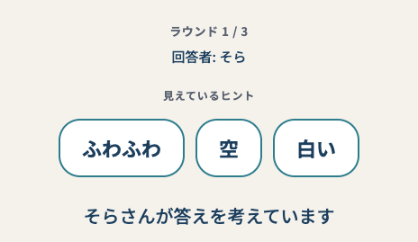
かぶらずヒント
みんなでヒントを出してお題を当てよう！ただし被ったヒントは消えてしまう協力型ワードゲーム。
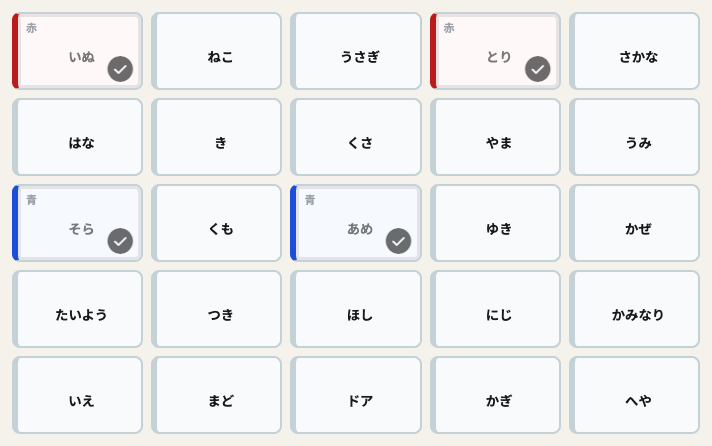
ことば探偵
ヒント役の言葉から、自分のチームのカードを見つけ出す連想型チームゲーム。相談しながら推理しよう。
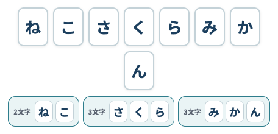
もじそろえゲーム
山か捨て札（新しい順に3枚まで）から文字タイルを1枚取って1枚捨てる、を順番にくり返し、手もとの8枚を「2文字・3文字・3文字」の3つの言葉にそろえたら「あがり」。言葉になっているかはみんなで確かめる。
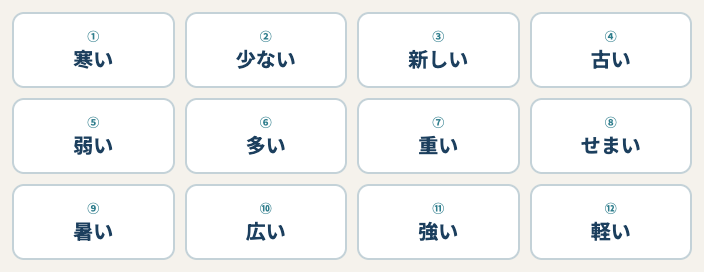
コトバペア
裏向きのことばカードをめくって、意味でつながる2枚を探す神経衰弱式の協力ゲーム。そろえたら同じ人がもう一回。相談しながらでOK。全カード表向きの相談向けモードも選べる。
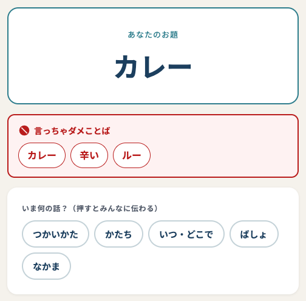
とおまわしクイズ
お題のことばを「言っちゃダメことば」を使わずに説明して、みんなに当ててもらう協力ゲーム。観点チップと答えの候補つきで、声を出しにくい子も選んで参加できる。
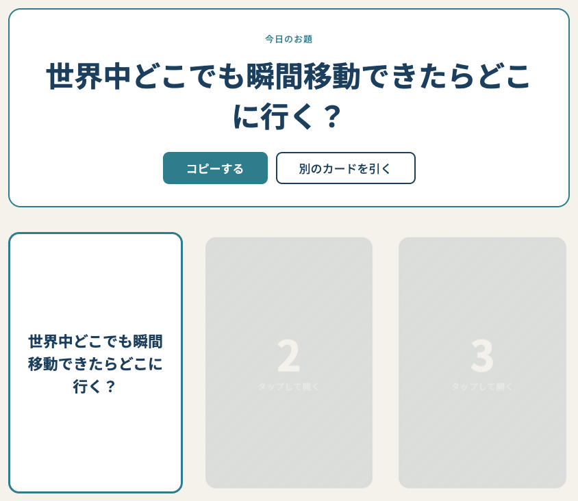
トークテーマカード
カードをめくってトークテーマを引くアイスブレイクツール。セッション開始時や話題に詰まったときに。
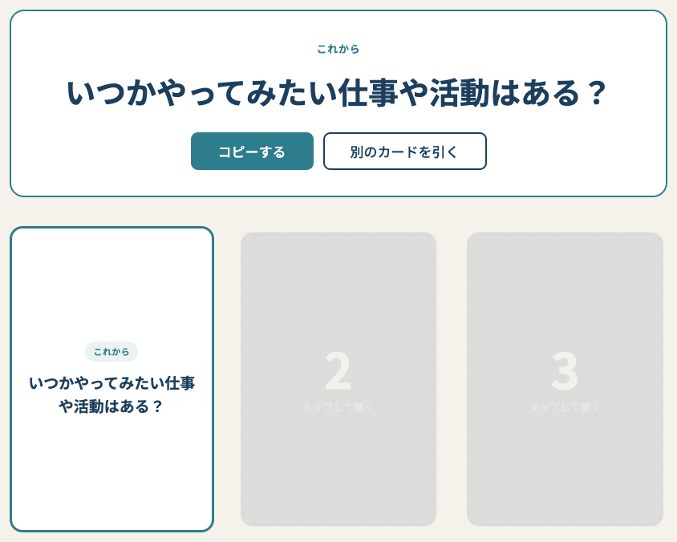
おとなトークカード
大人どうしが質問し合う雑談カード。子どもは大人の仕事や歩んできた道を横で聞ける、キャリアにつながる雑談タイムに。
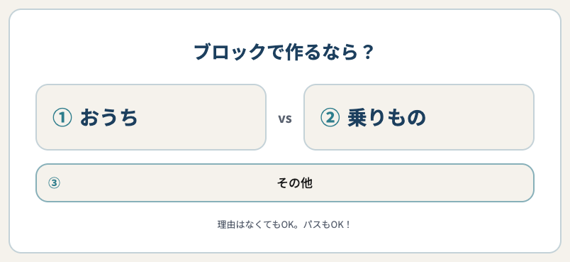
どっちにする？
軽い2択を選ぶアイスブレイクカード。どっちを選んでもOK、「自分で決めていい」感覚を育てる1対1面談向けツール。
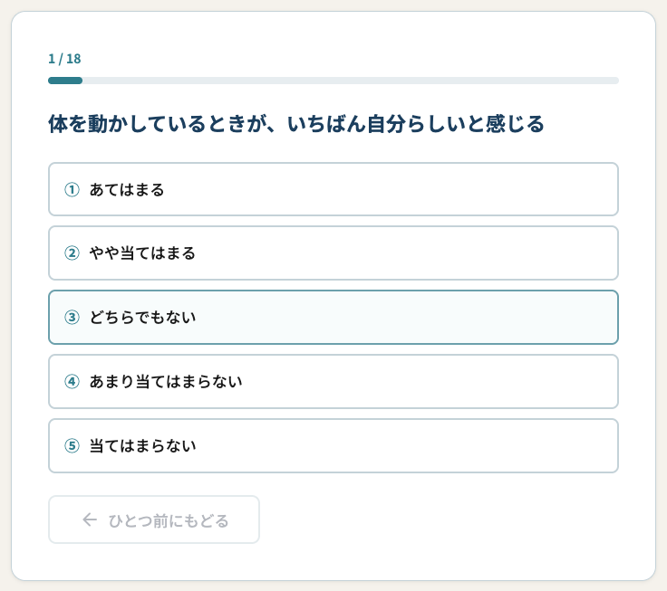
すきタイプチェック
18この質問にこたえると、じぶんの「すき」のタイプがわかる診断。6つの軸のわりあいも出るので、作戦会議で会話のタネにできる1対1向けツール。
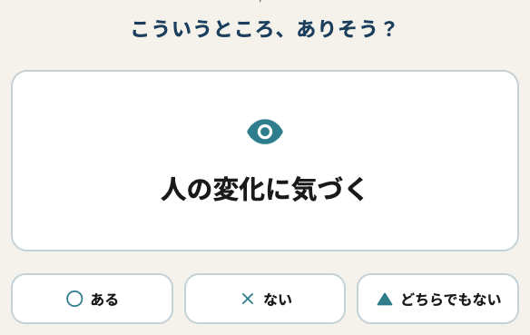
つよみカード
「こういうところ、ありそう？」の強みカードに1枚ずつ「ある」「ない」「どちらでもない」で答えていく1対1面談向けツール。「ある」と答えたカードをながめながら話す。
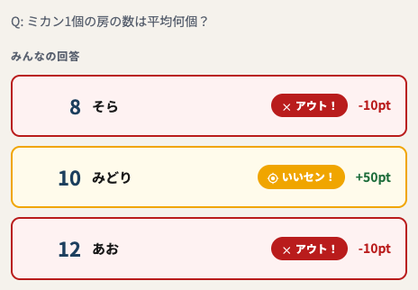
ドまんなか
数字でいいセンをいこう！リアルタイム対戦パーティーゲーム。中央値を当てた人が勝ち。
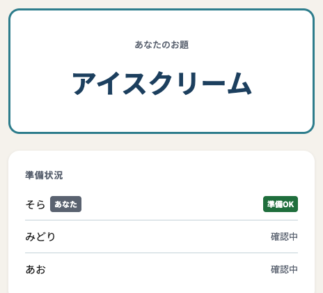
ワードウルフ
ひとりだけ違うお題を持つのは誰？会話の中からウルフを見つけ出す正体隠し系ゲーム。
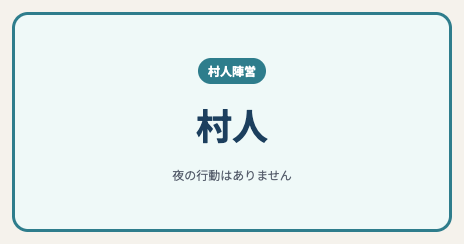
人狼ゲーム
正体を隠して生き残れ。村人と人狼が騙し合う本格リアルタイム対戦ゲーム。全14役職対応。
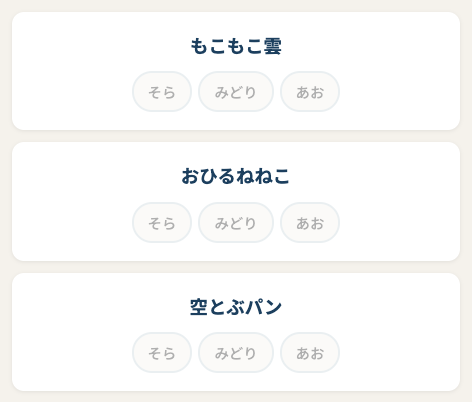
名前変えゲーム
メタバース上で名前を変えた人を当てよう！変えた人は投票されないように隠しきれるか。
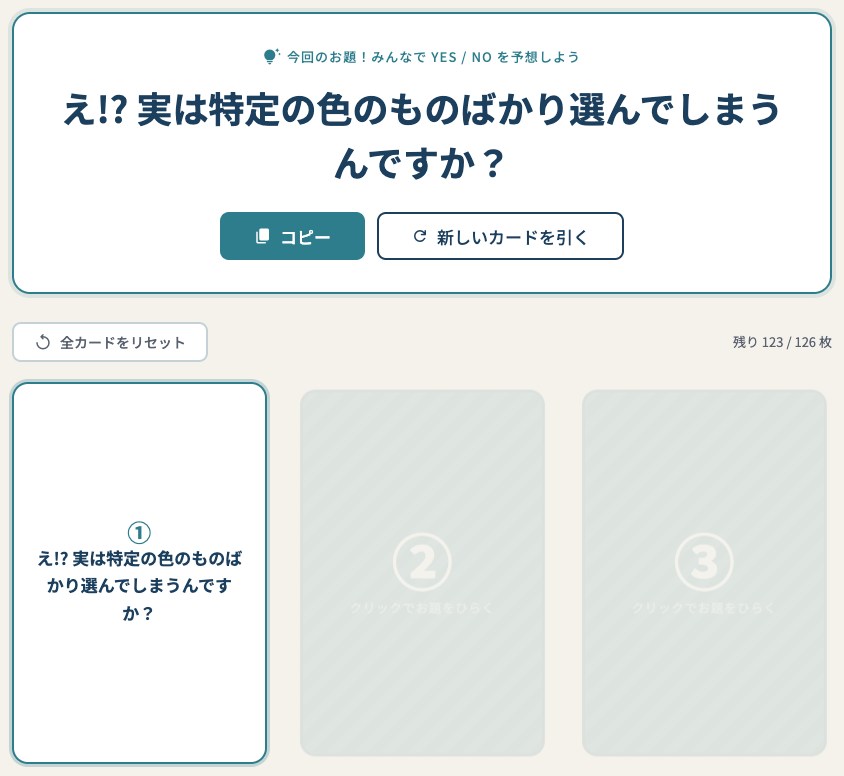
え!? 実は○○なんですかゲーム
ある人の意外な一面を推理するクイズ。カードをめくって「え!? 本当に！？」を楽しもう。
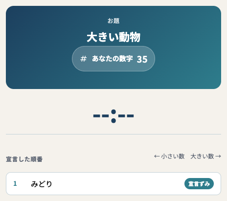
たとえならべ
数字をお題に例えてヒントを言い合い、小さい順に宣言するタイミングを競う協力ゲーム。
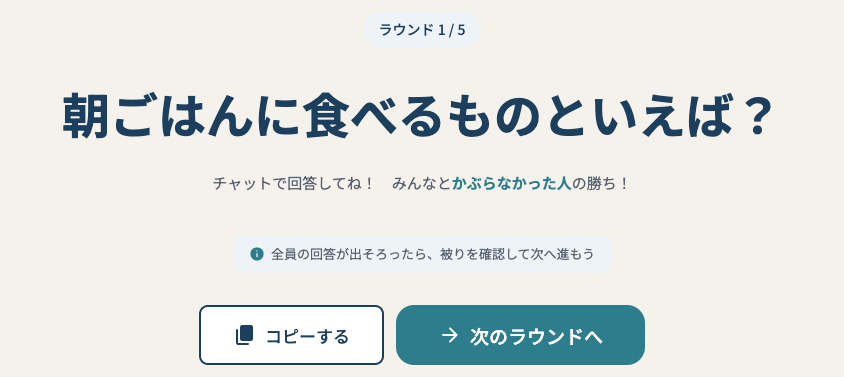
以心伝心しないゲーム
お題に対してみんなとかぶらない回答をしよう！かぶらなかった人の勝ち。
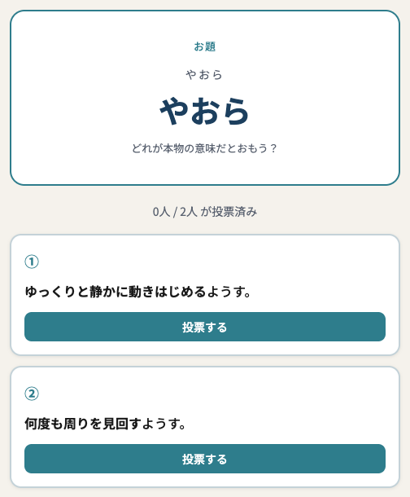
うそつき辞書
めずらしいことばの意味の「？？？」にそれっぽいうそを入れて本物にまぜる。どれが本物か当て合うことばパーティーゲーム。
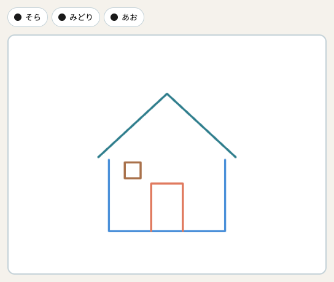
まぎれ絵師
お題を知らない「まぎれ絵師」がひとりだけ。1人1筆ずつのおえかきから見つけ出そう。話さなくても遊べる正体かくしゲーム。
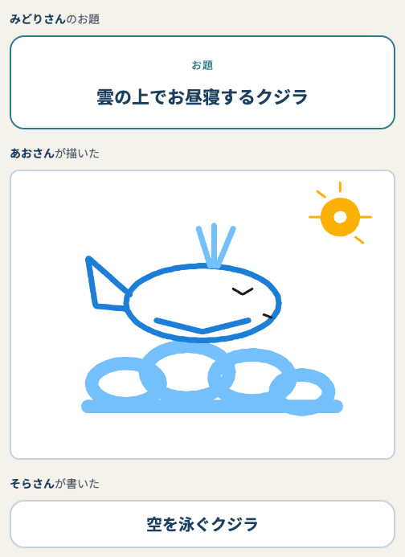
お絵描き伝言ゲーム
書いた文を次の人が絵に、その絵を次の人が文に。順番に回していくと、最初のお題はどう変わる？ 最後にみんなで見せあう、点数のない伝言ゲーム。
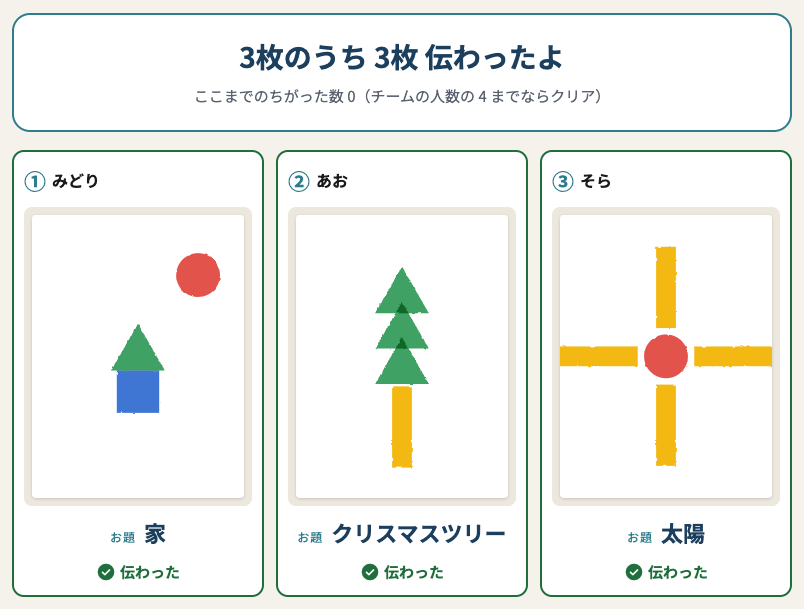
スタンプあてゲーム
丸・四角・長方形・三角のスタンプだけで、こっそり配られたお題を表す。当てる人が、どの絵がどのお題かを当てる協力ゲーム。押せる回数は5回から1回まで減っていく。
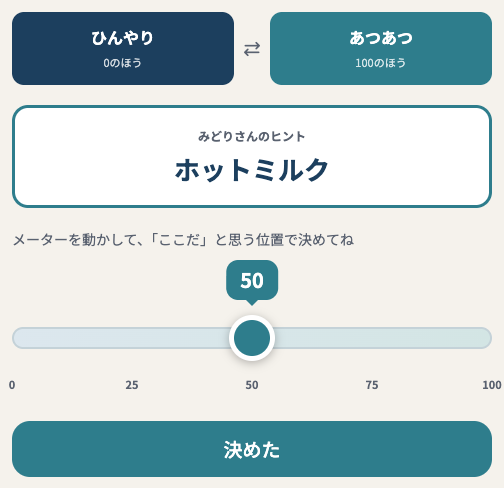
ピッタリメーター
ヒントをたよりに、メーターの位置をぴったり当てる得点ゲーム。ターゲットに近いほど高得点。ヒントは文字入力だから話さなくても出題者になれる。
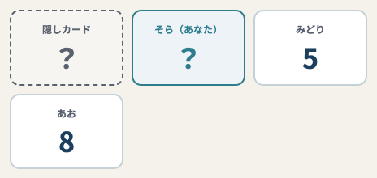
かくれナンバー
自分の数字と場の隠しカードが見えない！みんなの発言をヒントに、全部の数字の合計を推理する数字ゲーム。
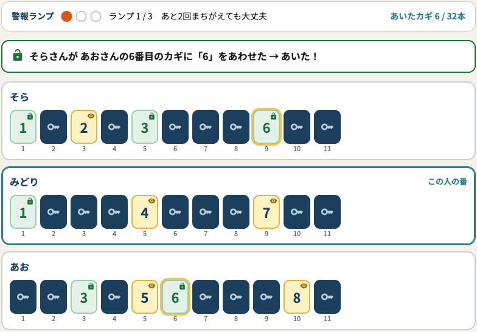
カギあわせ
数字のカギを小さい順に並べて持つ。見えるのは自分のカギだけ。仲間のカギの数字を推理して、同じ数字どうしをあわせ、宝箱をあける協力ゲーム。
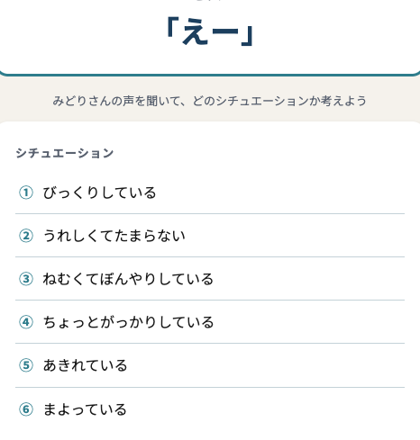
こえだけシアター
短いセリフを声だけで演技して、どんな気持ちかを当て合うゲーム。演じるのは立候補制、当てる側はボタンで参加。
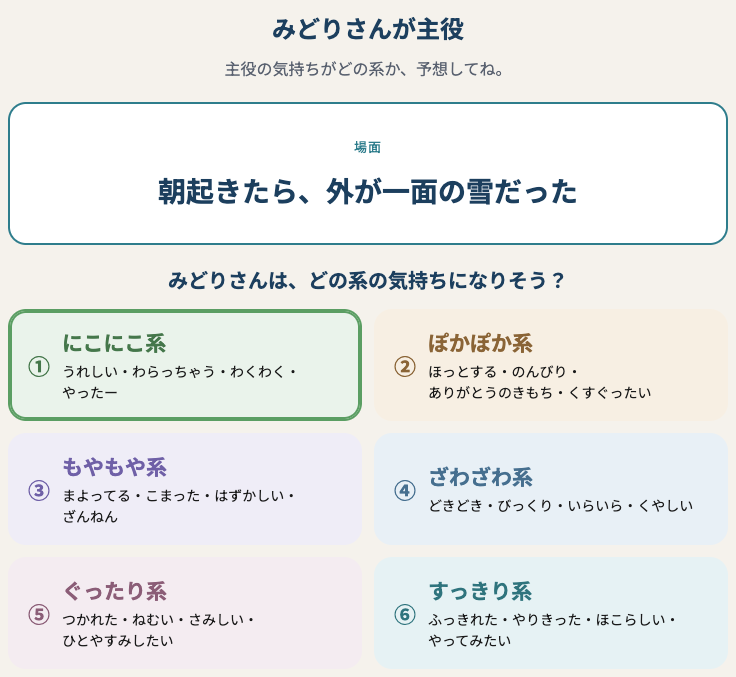
気持ち当てゲーム
場面カードを見て、主役の気持ちがどの系かをみんなで予想する。主役は系とぴったりのことばを先にこっそり選んでおく。点数はなし。ルームに入らない子も、共有画面を見てチャットで予想できる。
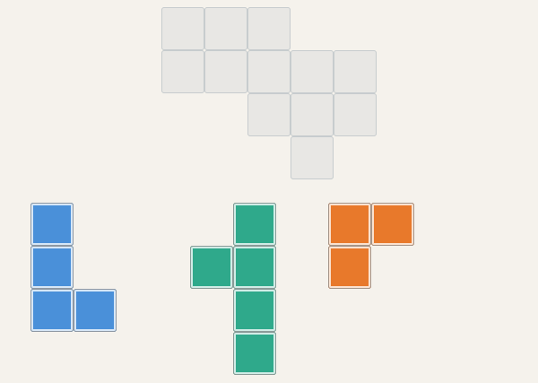
ピタハメ
カラフルなピースを回して動かして、グレーの型（かた）にぴったりはめるスピードパズル。ひとりで練習も、みんなで同じ問題に挑戦して完成した順を見ることもできる。
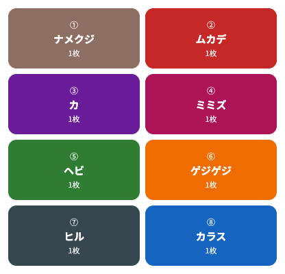
おしつけずかん
イヤ〜な生きもののカードを、宣言つきで押しつけ合うブラフゲーム。「ホントかウソか」を当てるか、こっそり見て次の人に回すか。同じ生きもの4枚か全8種類を引き取るとひとり負け。
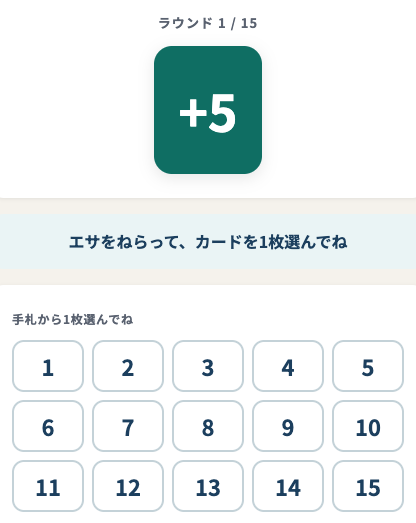
エサドリ
エサカードをねらって、1〜15の手札から1枚を同時に出す。おなじ数字を出した人どうしはかぶって無効。15ラウンドの合計点で勝負する数字カードゲーム。
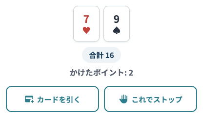
ブラックジャック
カードを引いて、手札の合計21ちょうどをめざすカードゲーム。21を超えたらバースト。ポイントをかけて、ディーラー（アプリ）との勝負に挑む。ポイントが0になっても自動チャージで最後まで遊べる。
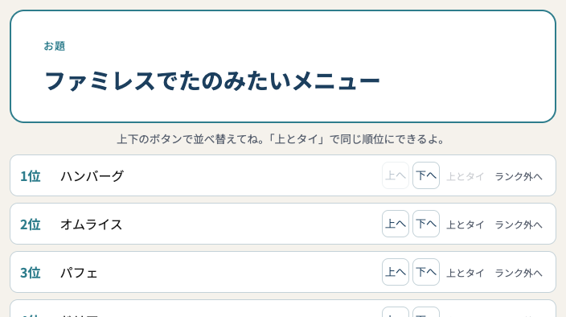
みんなでランキング
ホストがお題を選び、各自でランキングを作る。ほかの人の1位を予想してから、結果を見せ合う。
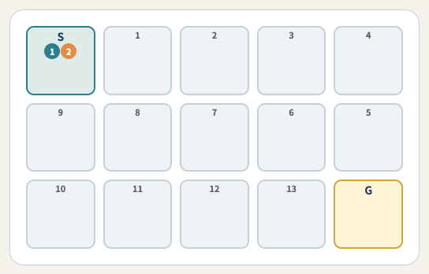
興味スゴロク
サイコロを振ってマスに止まり、好きなことややってみたいことを話そう。対話のきっかけづくりに。
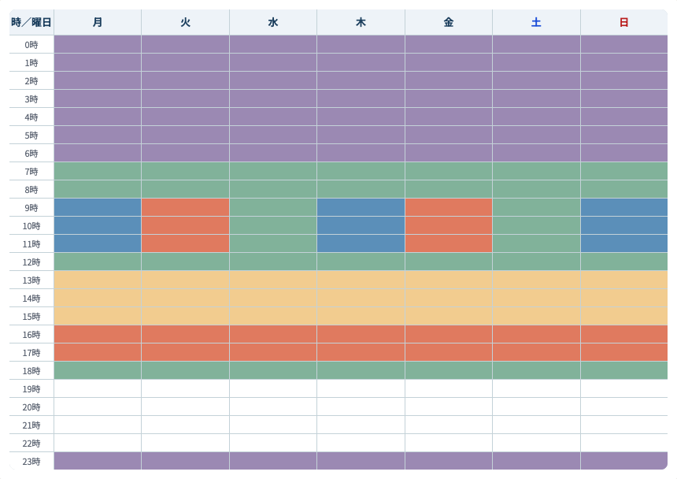
塗り絵カレンダー
1週間の過ごし方を5色で塗って眺めるツール。メンターと一緒に、自分の時間の使い方を見つめ直す対話のきっかけに。
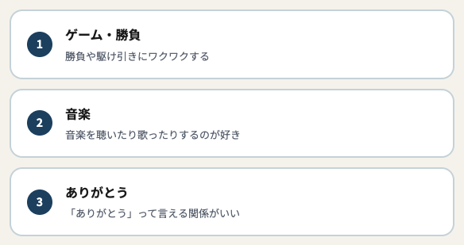
バリューカード
カードを選んで並び替えて、自分の「大事」を見つけるカードワーク。メンターとの対話の材料に。
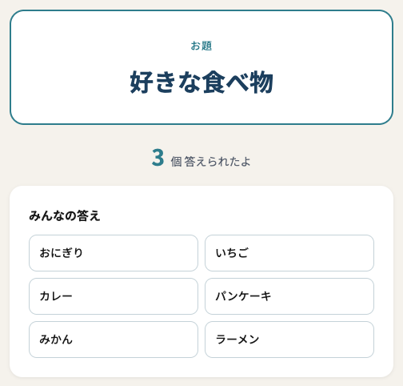
いくつ言える？
お題にいくつ答えられるかな？ 制限時間内に思いついた答えを書き出して、みんなの答えを眺めよう。比較なし、発見重視。
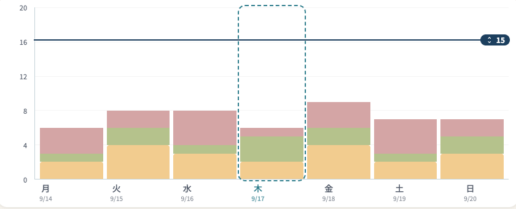
キャパグラフ
1週間のがんばり量を項目別の負荷で見える化。自分でドラッグして引く「キャパライン」と見比べて、頑張りすぎを客観視するツール。
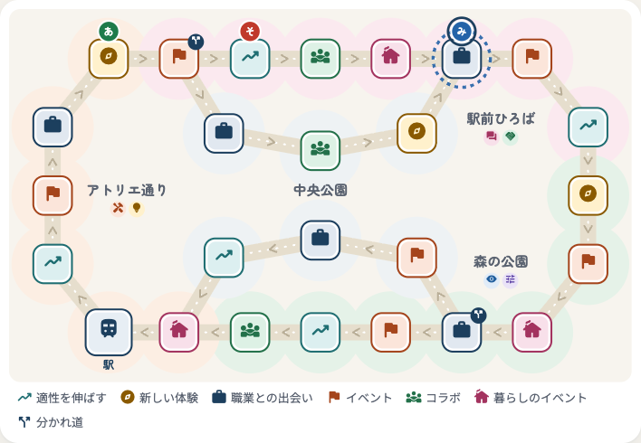
キャリアすごろく
子どものころから、おとなになるまでを、すごろくで進む。体験で「適性」をため、たまった適性に合う職業を選ぶほど、しごとマスのポイントが多い。各自の端末でも、1台の画面をみんなで見ても遊べる。ポイントはゲームの中だけのもの。